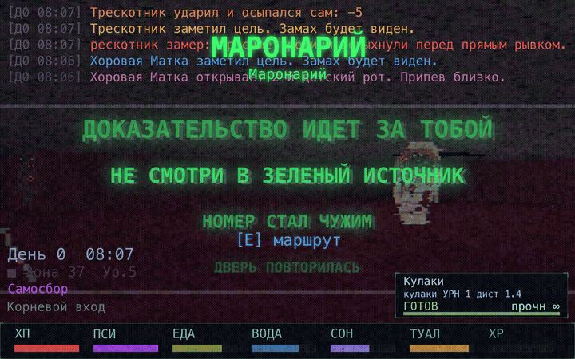
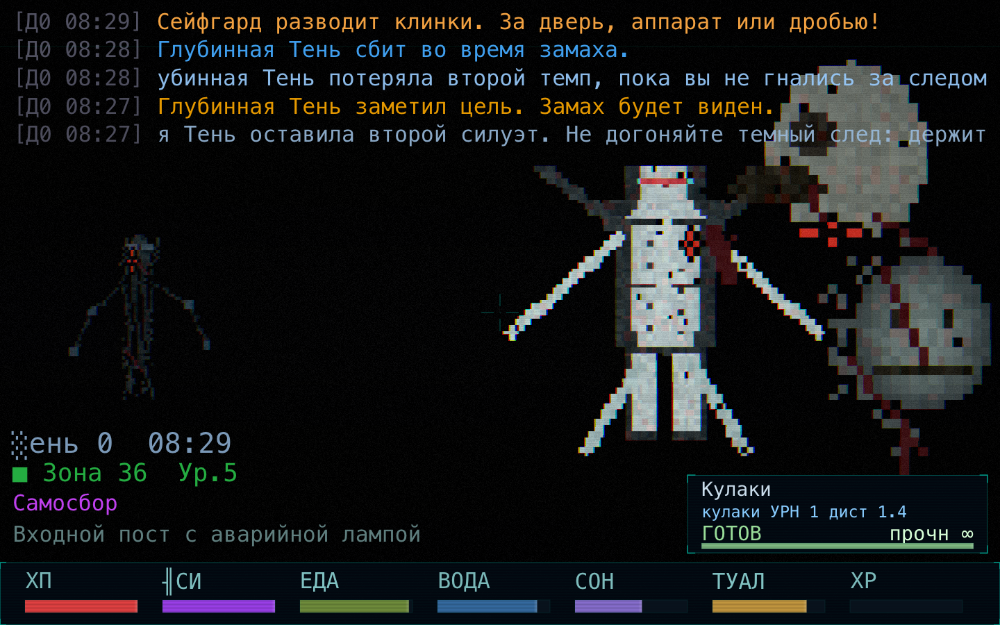
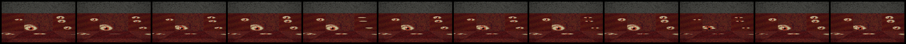

GIGAH rush approved frontpage assetsUpload
 01 anim_hell_blinking_eyes.gif
01 anim_hell_blinking_eyes.gif
GIF: адские стены и пол с моргающими глазами, 36 кадров / 4 секунды

02 anim_underhell_maronary_samosbor_loop.gif
GIF: Underhell + маронарий/самосбор
 03 hell_02-hell-maronary-samosbor.png
03 hell_02-hell-maronary-samosbor.png
ад + маронарий, сильный зелёный самосборный эффект
 04 hell_03-underhell-gate-pack.png
04 hell_03-underhell-gate-pack.png
Underhell, нижний пропускник и опасный пак
 05 hell_05-void-eye-protocols.png
05 hell_05-void-eye-protocols.png
Пустота, протоколы и тёмные сущности

06 hell_06-darkness-route-blackout.png
Darkness, почти чёрная зона
 07 hell_07-procedural-wall-snake.png
07 hell_07-procedural-wall-snake.png
процедурная опасная зона wall_snake
 08 hell_09-smog-false-safe-block.png
08 hell_09-smog-false-safe-block.png
смог / ложная зачистка
 09 loc_03-ministerstvo-raionsovet-archive.png
09 loc_03-ministerstvo-raionsovet-archive.png
министерство, райсовет и архив
 10 loc_04-kollektory-maintenance.png
10 loc_04-kollektory-maintenance.png
коллекторы / технический этаж
 11 loc_07-krysha-antenny.png
11 loc_07-krysha-antenny.png
крыша, небо и антенны
 12 extra_01-living-start-hud.png
12 extra_01-living-start-hud.png
жилая зона, стартовый HUD
 13 extra_03-living-monster-ring-clean.png
13 extra_03-living-monster-ring-clean.png
жилая зона, монстры вокруг игрока
 14 extra_04-living-combat-hud.png
14 extra_04-living-combat-hud.png
боевой HUD-кадрService
 15 anim_hell_blinking_eyes_preview.png
15 anim_hell_blinking_eyes_preview.png
preview-кадр для проверки GIF

16 anim_hell_blinking_eyes_strip.png
контрольная полоска кадров, не для загрузки
 17 contact_sheet.png
17 contact_sheet.png
старый контакт-лист, не для загрузки